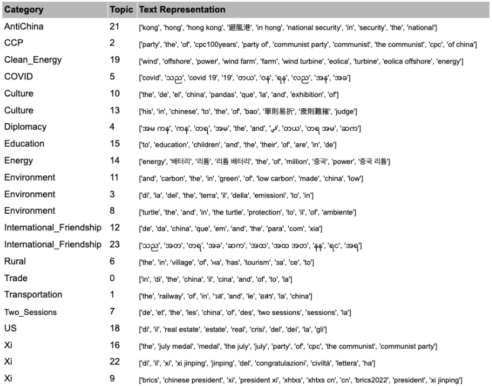
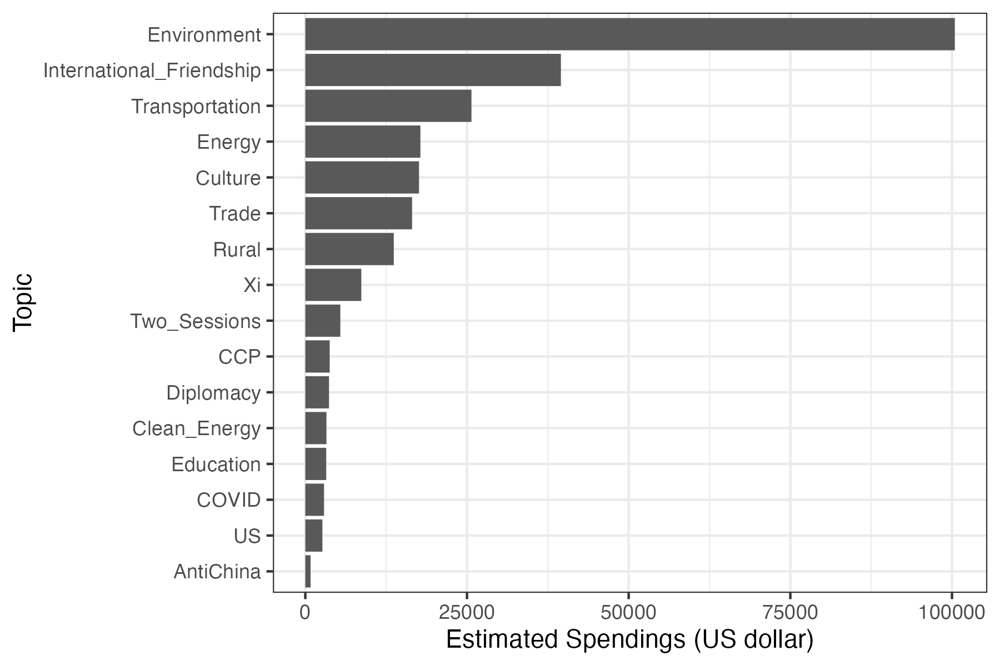
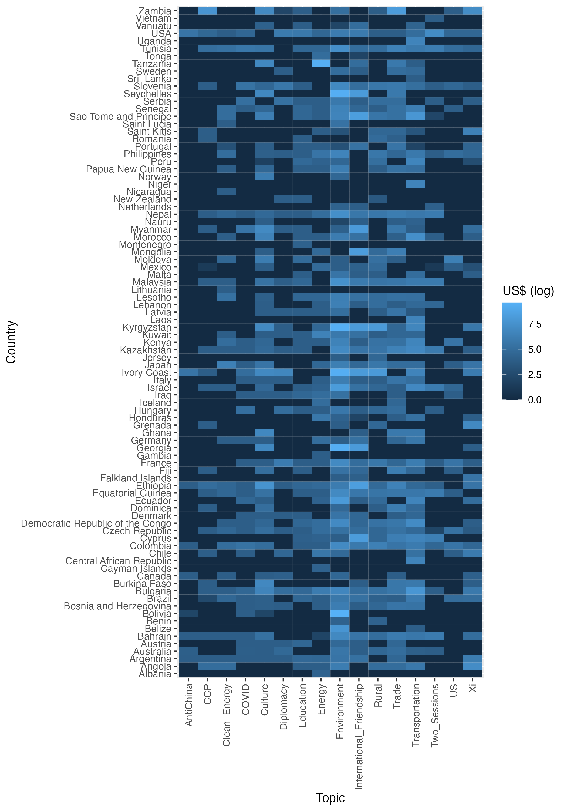
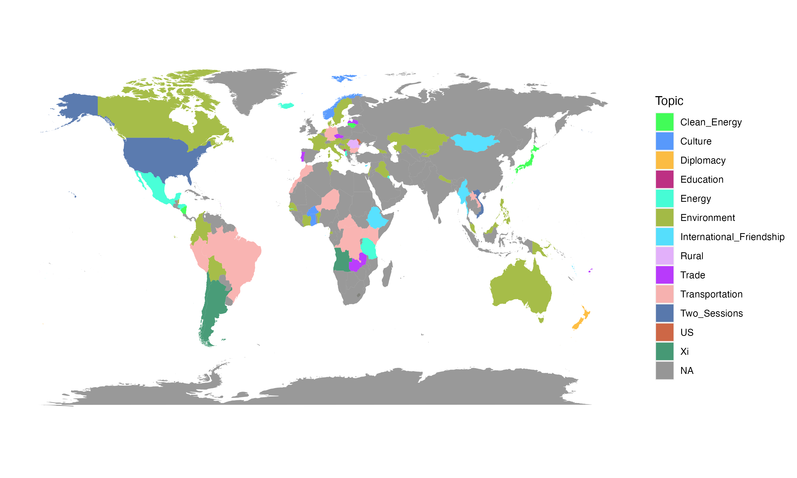

Decrypting Digital Authoritarianism Conference
Chinas Digital Propaganda on Meta
Justin Chun-ting Ho
Amsterdam School of Communication Research In collaboration with Fabio Votta (Amsterdam School of Communication Research)
China and Propaganda
- "Gun and Pen": Propaganda has been a vital part of CCP
- Mao's propaganda techniques
- 50-cent party
China's External Propaganda
and what we know so far?
- "Wolf warrior" diplomacy
- Disinformation Campaign
We treat our friends with fine wine,
but for our enemies we got shotguns
China's External Propaganda
- Telling China's story to the world
- Countering "hostile foreign propaganda"
- Countering Taiwan independence proclivities and promoting unification
- Propagating China's foreign policy
Social Media Platforms' Reaction
- In 2019, Twitter (now X) removed 936 accounts
- In 2023, Meta removed 7,704 accounts and 954 pages
- China is found to have adapted its strategy to stay within the boundaries of platform rules
- Insights from Chinese Government Procurement website...
How China uses digital ads on Meta during election times around the world?
Data
- Meta Ad Targeting dataset (Votta et al., 2024)
(156 elections in 133 countries between August 2020 and December 2022) - 117 Chinese pages who ran 2,265 ads in 90 countries
Identified by keyword search ("China" in 78 languages), validated manually - Estimated total spending of US$295,373 on paid ads
Language Model
- BERTopic
- Identified 16 validated thematic categories
Thematic Categories
Results
Estimated Spending by Topic
Ad on Environment
Distribution of Estimated Spending
Top Topic per Country
Conclusion
- Mostly Legitimate* Content
- Heavy Focus on Environment
- Alignment with Belt & Road Initiative